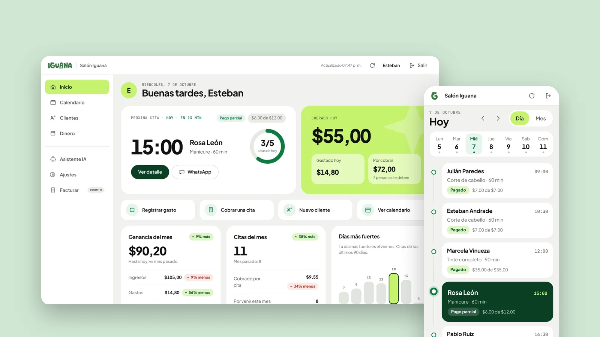
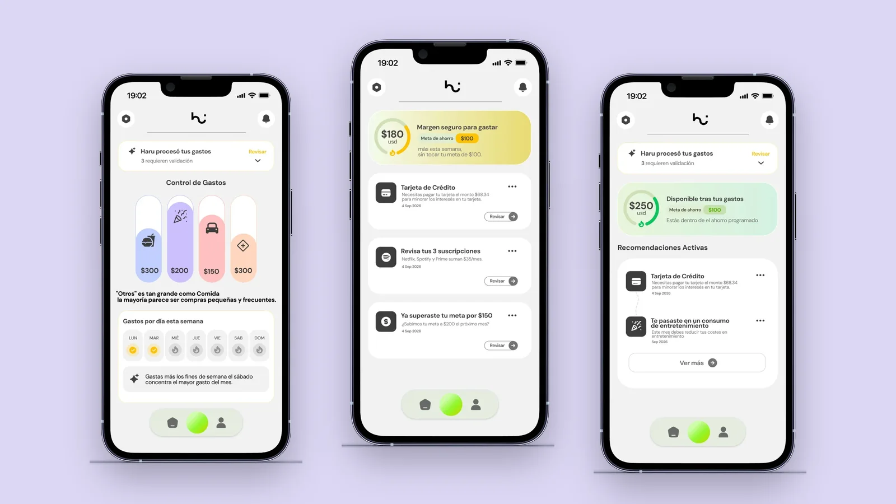
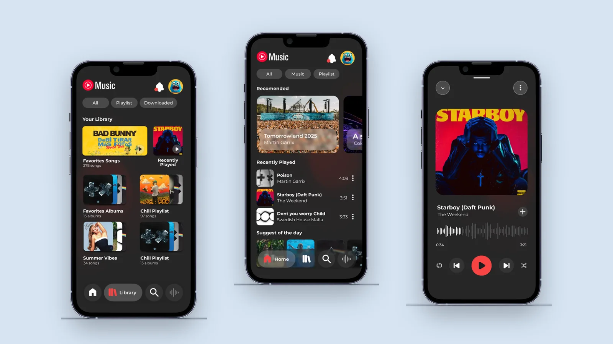

UX & product designer · Quito, Ecuador
I make complicatedthings feelobvious.
Apps, dashboards and online stores that people use every day. I handle the research, the journeys, the screens and the system underneath.
Projects
Five case studies, 2025 to 2026Iguana Panel
A calendar-first admin panel for small service businesses, built on its own design system.
- Type
- Admin dashboard
- Focus
- Design system
- Year
- 2026

Le Petit Paradis
A children’s clothing shop built around one question: can I trust this store?
- Type
- E-commerce
- Focus
- Mobile checkout
- Year
- 2026

Haru
A money app that explains the numbers instead of only showing them.
- Type
- Fintech concept
- Focus
- Insight over data
- Year
- 2026

GoNow
A transit app for Quito that started with six interviews and one safety button.
- Type
- Mobile app
- Focus
- Research, safety
- Year
- 2025

YouTube Music
Three screens I found frustrating, audited and redesigned, with before and after.
- Type
- Redesign concept
- Focus
- UX audit
- Year
- 2025

How I work
Three habitsAsk before drawing
Interviews and observation come first. When a project has no research, the page says so.
Map the path
Journeys and flows give every screen a reason to exist, and every decision a principle.
Build it to last
Tokens and components first, then prototypes made with code, using Claude Code, Antigravity and Codex.
About
Quito, EcuadorI started in graphic design and multimedia, then moved toward the people using the screens. Now I design products that explain themselves.